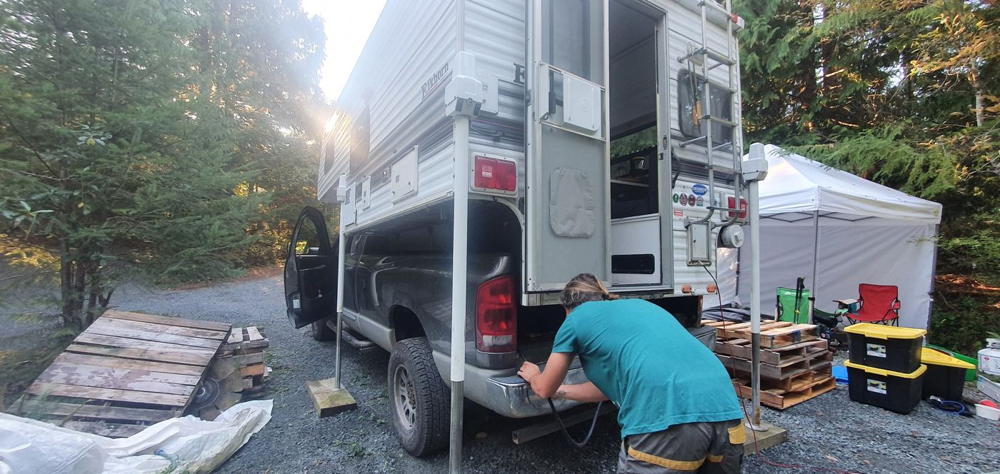

Lithium vs AGM: which battery should you get?
The short version
- You can use almost all of a lithium battery, but only about half of an AGM.
- So for the same job, AGM needs to be about twice the size, and ends up around three to four times heavier.
- Lithium costs more upfront but lasts many more years. For most vans, caravans and 4WDs, it's the better buy.
Want your own numbers? Open the Power Planner → or see the ready-made kits
Most people choosing a house battery end up deciding between two types: lithium (LiFePO4, or lithium iron phosphate, the safe, stable kind used in camping) and AGM (absorbent glass mat, a sealed type of lead-acid battery). Here's what actually matters.
The big one: how much you can actually use
The number on the label isn't what you get. An AGM battery wears out quickly if you regularly use more than about half of it, so a 100Ah AGM really gives you about 50Ah. A lithium battery is happy to be used down to 10 to 20% left, so a 100Ah lithium gives you about 80 to 90Ah.
It's like two water bottles of the same size, where one can only be drunk halfway before it cracks. To carry the same amount of water, you'd need two of them.
Side by side
| Lithium (LiFePO4) | AGM | |
|---|---|---|
| Usable capacity | About 80 to 90% | About 50% |
| Weight, 100Ah | About 11 to 13kg | About 27 to 30kg |
| Weight for 100Ah you can actually use | About 13kg | About 55 to 60kg |
| Lifespan | Typically 2,000 to 5,000+ charge cycles | Typically a few hundred to about 1,000 cycles |
| Upfront cost | Higher | Lower |
| Voltage as it empties | Stays steady until nearly empty | Drops steadily, so lights dim and fridges can cut out early |
| Charging | Fast. Needs a charger with a lithium setting | Slower, especially near full |
Typical figures. Check the specs of the exact battery you're looking at.
What about cost?
Lithium costs more to buy. In Australia, budget 100Ah lithium batteries start around $400 to $500, and premium brands cost a lot more. But because a lithium battery gives you nearly twice the usable power and lasts many times more cycles, it usually works out cheaper over its life than buying and replacing AGMs.
When AGM still makes sense
- Tight budget and occasional use, like a few weekends a year.
- Replacing like for like in an older system whose chargers don't have a lithium setting.
- Charging in freezing conditions. Lithium batteries shouldn't be charged below about 0°C unless they have built-in low-temperature protection or heating. Many quality ones now do.
Things to check before you buy lithium
- It's LiFePO4, with a built-in battery management system (BMS) that protects it.
- Your DC-DC charger and solar regulator have a lithium charging setting.
- It can handle your inverter's biggest load if you run a coffee machine or kettle.
- Cold-weather protection if you travel somewhere freezing.
- A decent warranty, ideally with support in Australia.
See what size battery you need, in lithium or AGM, and how much each would weigh.
Work out my battery
Our slide-on camper in Canada ran on an AGM of around 120Ah, and it really struggled in the cold, from Vancouver Island to Montreal. A Bluetooth battery monitor let us see what was happening, which helped a lot. If you're choosing now, it's worth knowing how each type copes with the conditions you'll actually travel in.
Quick answers
Is lithium better than AGM for a van or caravan?
For most vans, caravans and 4WDs, yes. You can use almost all of a lithium battery but only about half of an AGM, so AGM needs to be about twice the size and ends up around three to four times heavier. Lithium costs more upfront but lasts many more years.
What size AGM battery equals a 100Ah lithium?
About 200Ah, because you can only use about half of an AGM's rated capacity without shortening its life.
Can a lithium battery charge in freezing weather?
Most lithium batteries shouldn't be charged below 0°C. If you camp somewhere frosty, pick one with a built-in heater.
Sources
- REDARC: REDLAB Icon 100Ah lithium battery (specs, heater, warranty)
- Renogy: Reserve Mini 200Ah (low-temperature charge protection)
- Typical weights and usable capacity from manufacturer spec sheets for 100Ah lithium and AGM batteries.